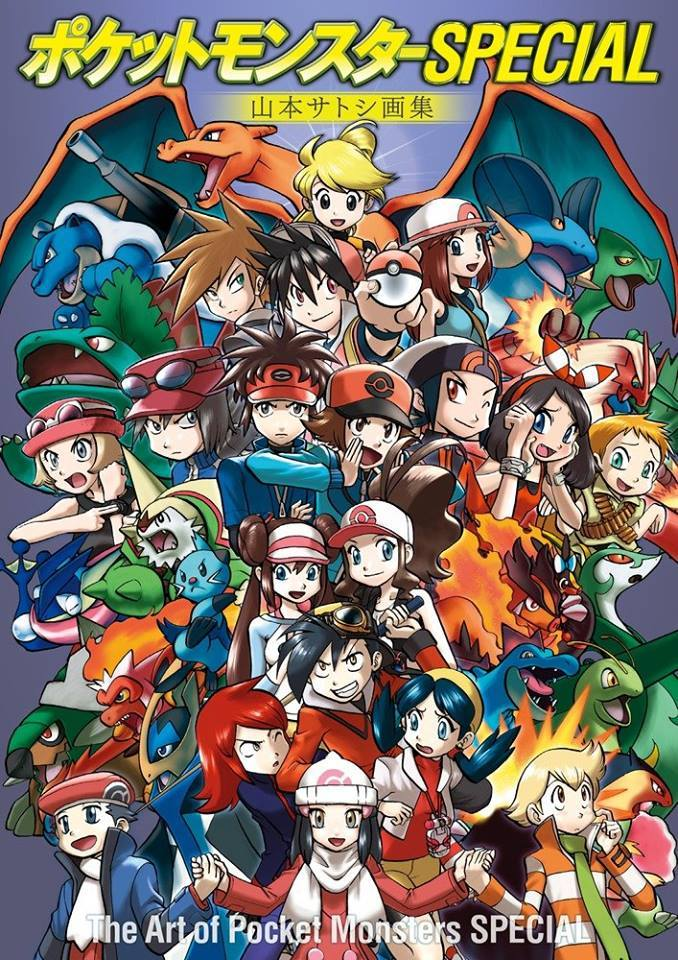

|
Existe una gran cantidad de series Pokémon en manga. Los mangas suelen salir en Japón por Shogakukan, y son traducidos al inglés en Norteamérica principalmente por VIZ Media y en los países asiáticos por Chuang Yi.
Debido a la popularidad que adquirió la franquicia rápidamente, varias empresas de diferentes sectores se interesaron por el mundo de Pokémon y el potencial que tenía. Así, en torno a los juegos de Pokémon empezaron a surgir revistas y cómics. Hasta la fecha se fueron presentando más de 13 sagas de Pokémon. Algunos de estos mangas se basan en el anime, y las películas, mientras otros son adaptaciones de los videojuegos y del Pokémon Trading Card Game.
p>A España llegaron los mangas basados en los primeros juegos de la saga Pokémon Mundo Misterioso regalados como complemento de la revista mensual Jetix.
Actualmente Norma Editorial está publicando el manga Pocket Monsters SPECIAL al completo pero en un menor número de volúmenes, publicando de forma alternativa tomos de los juegos antiguos de los más actuales.
|
 |